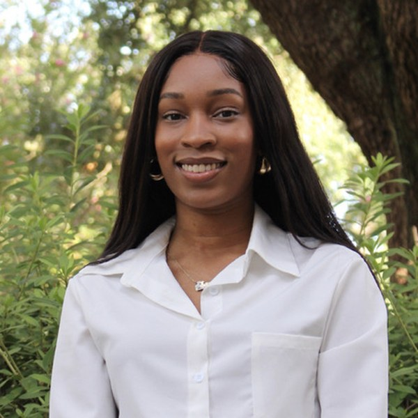

About
I am a physicist and a member of the North American Nanohertz Observatory for Gravitational Waves (NANOGrav), and I was previously part of the Laser Interferometer Gravitational-Wave Observatory (LIGO) collaboration. My work centers on understanding noise and turning noisy data into clear conclusions, whether that noise comes from a kilometer-scale interferometer or from the changing emission of a millisecond pulsar.
I am currently a NANOGrav Physics Frontiers Center Postdoctoral Researcher at the SETI Institute. I earned my Ph.D. in Physics from Louisiana State University in 2024, where my research focused on gravitational-wave detector data analysis at the LIGO Livingston Observatory, and my B.S. in Meteorology with a minor in Astronomy from SUNY Oswego in 2018.
Research
Pulse profile variability and pulsar timing
NANOGrav uses millisecond pulsars as a galaxy-sized detector for gravitational waves from pairs of supermassive black holes. Pulsars are remarkably stable clocks, but their pulse shapes are not always constant, and those changes can limit how precisely we can time them. I developed Gaussian-component timing methods to model pulse-profile evolution in PSR J1713+0747 through a profile-shape change event, improving its timing precision. This methodology is planned for future NANOGrav data releases.
I am also developing analysis pipelines to study single-pulse emission, mode changing, and weak emission in PSR J1909−3744 using Green Bank Telescope observations, which I help take. For this project I apply statistical and unsupervised machine-learning techniques, such as UMAP, to characterize pulse-to-pulse variability. In PSR J2145−0750, I am investigating mode changing with CHIME and Green Bank Telescope observations to understand how pulse-shape variability affects timing precision and nanohertz gravitational-wave sensitivity.
I am a pulsar timer for the NANOGrav 20-year dataset and help test and validate the timing-pipeline software used to produce the collaboration's next gravitational-wave dataset.
Gravitational-wave detector characterization
My Ph.D. research investigated loud transient noise ("loud glitches") in the Advanced LIGO detectors, like the one near GW170817, the first detection of colliding neutron stars. Using t-SNE, auxiliary-channel studies, and controlled noise injections with instrument scientists at LIGO Livingston, I ruled out several suspected sources, including residual gas and dust transiting the laser beam and the gravitational-wave control loop. I also supported commissioning and operations at LIGO Livingston through environmental sensor analysis software, magnetic-field injections, and detector characterization shifts.
During the fourth observing run, I co-led and then led the LIGO Noise Mitigation Review Team, which checks gravitational-wave candidates for instrumental noise and recommends how to handle it, and I developed training materials that streamlined onboarding for new reviewers. I also started a project characterizing scattered-light glitches, which a student I mentored later built on to develop the ArchGEM analysis tool.
Selected Publications
Author order in NANOGrav and LIGO–Virgo–KAGRA collaboration papers is alphabetical and does not reflect contribution, so my role is noted for each. A full list of 100+ publications is in my CV and on ORCID.
- 2026 J. Glanzer et al. (LIGO Collaboration), “LIGO Detector Characterization in the Second and Third Parts of the Fourth Observing Run.” arXiv:2608.12193. Noise Mitigation Review Team lead during the second part of the fourth observing run. arXiv
- 2026 S. A. Nichols et al., “Mitigating the Timing Impact of Anomalous Pulse Profile Shape Variability in PSR J1713+0747 with Gaussian Component Modeling.” The Astrophysical Journal, accepted. Lead author. DOI arXiv
- 2026 B. Jacobson-Bell et al., “The NANOGrav 15 yr and 20 yr Datasets: Timing Events and Pulse Shape Changes.” Astrophys. J. 1005, 58. Pulsar timer for the NANOGrav 20-year dataset. DOI arXiv
- 2026 K. McGowan, S. Nichols, S. Soni, C. Chatterjee, G. González, K. Holley-Bockelmann, and K. Jani, “ArchGEM: an Advanced Data Analysis Tool for Analyzing Scattered Light Noise in LIGO.” Submitted to ApJ. Built on a scattered-light glitch project I started; led by a student I mentored. arXiv
- 2025 A. G. Abac et al. (LIGO Scientific, Virgo, and KAGRA Collaborations), “GW231123: a Binary Black Hole Merger with Total Mass 190–265 M☉.” Noise mitigation reviewer for this event, checking whether instrument noise affected the detection. arXiv
- 2025 S. Soni et al. (LIGO Collaboration), “LIGO Detector Characterization in the first half of the fourth Observing run.” Class. Quant. Grav. 42, 085016. Editorial team member and Noise Mitigation Review Team co-lead. DOI arXiv
- 2024 J. Janquart et al., “What is the nature of GW230529? An exploration of the gravitational lensing hypothesis.” MNRAS. Detector characterization expert. DOI arXiv
- 2024 A. G. Abac et al. (LIGO Scientific, Virgo, and KAGRA Collaborations), “Observation of Gravitational Waves from the Coalescence of a 2.5–4.5 M☉ Compact Object and a Neutron Star.” Astrophys. J. Lett. 970, L34. Detector characterization expert on the editorial team for the GW230529 discovery paper. DOI arXiv
- 2024 S. Nichols, “Investigations and Characterization of Loud Transient Noise in Advanced LIGO Detectors.” Ph.D. thesis, Louisiana State University. DOI
- 2021 D. Davis et al. (LIGO Collaboration), “LIGO detector characterization in the second and third observing runs.” Class. Quant. Grav. 38, 135014. Provided analysis for loud glitches. DOI arXiv
Selected Talks
- Listening for Ripples in Spacetime Through NoiseOct 2026
- Timing Through Pulse Shape Variability in PSR J1713+0747Jun 2026
- Searching for Pulse Nulling in PSR J1909−3744May 2026
- Gaussian Modeling of a Pulse Profile Variation in PSR J1713+0747Mar 2026
- How to Train Your Pulsar: Timing J1713+0747 with Pulse Profile ComponentsMar 2026
- Einstein Was Kind of Wrong: How We Finally Heard the UniverseFeb 2026
- Timing J1713+0747 with Pulse Profile ComponentsNov 2025
- The Anatomy of a Pulse: Gaussian Fitting Through the J1713+0747 AnomalyJun 2025
- Cosmic Clocks and Celestial TimekeepersMar 2025
- The Dirty Laundry of Gravitational Wave DetectionNov 2023
- Exploring the Origins of Loud Glitches in aLIGO Detector DataSep 2023
- Investigation of Loud Transient Noise Sources in aLIGO DetectorsApr 2023
- LIGO Detector Characterization for Instrument ScientistsMar 2022
Outreach & Teaching
Outreach and media
- K–5 Career Day
- Secondary School Outreach Program
- Channel 5 News Interview
- Space News with Jay Ducote
- Astronomy on Tap
- Girls’ Day at the Museum
Teaching and mentorship
- NANOGrav Student Workshop
- IPTA Student Mentor
- Honors Thesis Supervisor
- LIGO Research Mentor
- LSU Graduate Teaching Assistant
Leadership & Service
- APS Division of Gravitational Physics (DGRAV)2026–present
- International Pulsar Timing Array2025–present
- NANOGrav Engagement & Community Committee2025–present
- NANOGrav Fall Student Workshop2026
- American Physical Society2026
- LSU Physics & Astronomy Innovation and Engagement Committee2020–2023
- LSU Physics & Astronomy Graduate Student Organization2021–2022
Contact
SETI Institute
shania.nichols@nanograv.org